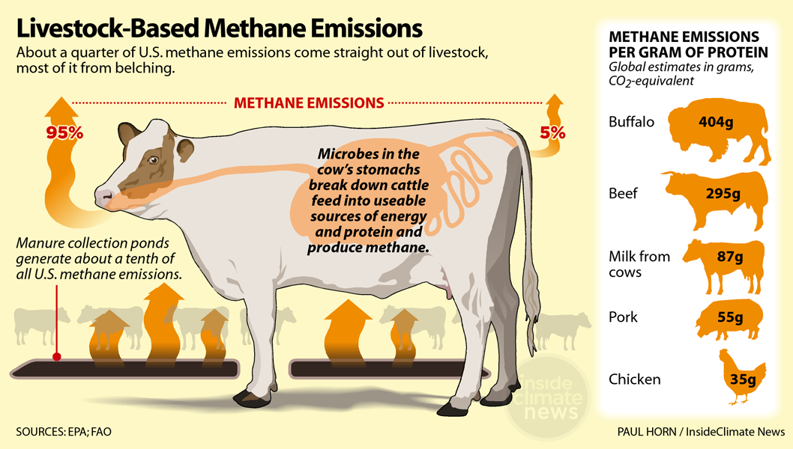

The Greatest Environmental Engineering Problem of Our Time
Shangwei Liu
CDE Outreach
Department of Civil Engineering
NUS
About Me
Shangwei Liu
Education Background
Beijing Normal University
B.Sc. · Environmental Science
Princeton University
Ph.D. · Public Policy
Harvard University
Postdoctoral Fellow · Environmental Policy
Mission
Bridging engineering and technical analysis with policy and economic thinking
Research Focus
🌍 Decarbonize the whole economy
How do we decarbonize the whole economy to reach net zero?
🌡️ Impact of climate change on our world
Understanding how a changing climate reshapes societies, economies, and ecosystems.
Atmospheric CO₂ Concentration over the Past 800,000 Years
426 ppm
2025
Highest in 3 million years
369 ppm
Year 2000
~280 ppm
Industrial Revolution
Rapid rise since 1760 (Industrial Revolution) is largely driven by a fossil fuel economy —
burning coal, oil, and gas releases CO₂ stored underground for millions of years.
Your entire career spans the critical transition period.
Country
2030
2050
2060
2070
🇺🇸 USA
−50 % vs 2005 levels
Net zero
Go Negative
🇪🇺 EU
−55 % vs 1990 levels
Net zero
Go Negative
🇸🇬 Singapore
Peak at 60 MtCO₂e
Net zero
Go Negative
🇨🇳 China
Emissions peak; −65 % carbon intensity vs 2005
Net zero
Go Negative
🇮🇳 India
−45 % carbon intensity vs 2005
Net zero
Timeline is based on Stated Aspirations — actual outcomes depend on policy, technology, and political will. We will see.
One of the Greatest Challenges of Our Time
How do we decarbonize the global economy?
We must reduce global CO₂ emissions from ~38 Gt/yr today
to net zero within your working lifetime —
while powering a growing world economy.
Where Do CO₂ Emissions Come From?
⚡ ELECTRICITY
41 %
Industry · Buildings · EVs · Data centres
🚗 TRANSPORTATION
24 %
Road · Shipping · Aviation
🏭 INDUSTRY
21 %
Steel · Cement · Chemicals
🔥 BUILDING HEAT DIRECT COMBUSTION 9 %
OTHERS 5 %
Source: IEA (2023) — fossil fuel CO₂ only
Where Does Electricity Come From Today?
Global electricity mix (2023)
Source: IEA 2023
Singapore electricity mix (2023)
Natural gas95 %
Solar4 %
Other1 %
Singapore runs almost entirely on natural gas.
Wind & Solar: The Fastest-Growing Energy Sources in History
Source: IRENA, IEA (2024)
⚠ Intermittency
Wind and solar are not always available. Integrating them requires the entire electricity system to be restructured.
🏗 New infrastructure
📊 New emissions accounting
💼 New economics & business models
Solar Energy: 99 % cheaper in 40 years
Source: Our World in Data / IRENA
"An engineer is someone who can do for a dime what any fool can do for a dollar."
— Arthur M. Wellington
A core engineering challenge is driving costs down — making clean energy cheap enough for the whole world to adopt. Solar shows it is possible.
The Energy Trilemma
Every country faces a trade-off between three goals — you cannot fully optimise all three at once.
🔒
Security
Is the power always on? Can we survive supply disruptions?
💰
Affordability
Can households and industry afford it? Does it harm economic growth?
🌿
Sustainability
Is it low-carbon? Does it protect air, water, and land?
To decarbonize, engineers and policymakers must navigate this trilemma — finding pathways that reduce emissions without sacrificing energy security or economic growth.
A New Electricity Consumer: AI & Data Centres
Global data centre electricity consumption
2024415 TWh (1.5 % of global electricity)
2030 (projected)~945 TWh (~3 % of global electricity)
Source: IEA, Energy and AI (2025)
📈 Growing 4× faster
Data centre electricity has grown 12 % per year since 2017 — four times faster than total global electricity demand.
🤖 AI is the accelerant
AI-driven servers are growing at 30 % per year — three times faster than conventional servers (9 %/yr).
🌏 Scale check
945 TWh exceeds Japan's entire annual electricity consumption — all added in just six years.
Training One AI Model: How Much Energy?
Training GPT-3 (175 billion parameters) consumed:
1,287 MWhof electricity — one training run
≈ Annual electricity use of 120 U.S. households
Source: Patterson et al. (2021), Carbon Emissions and Large Neural Network Training, arXiv:2104.10350
📦 This is just the beginning
Models since GPT-3 have grown 10–100× larger, with training runs that consume proportionally more energy.
🔁 Training vs. Inference
Training happens once. But inference — answering billions of queries every day — adds up continuously across the entire infrastructure.
⚡ The question
AI growth = data centre growth = electricity growth. Where does that electricity come from?
AI & Decarbonization: Problem or Solution?
❌ The Problem
Fast-growing electricity demand Data centres: +12 %/yr since 2017, accelerating with AI
Still mostly fossil-fuelled In 2024, ~40 % of data centre electricity came from fossil fuels — the grid has not yet decarbonized
Water & land footprint Cooling large data centres consumes enormous amounts of freshwater
✅ The Opportunity
Grid optimisation AI forecasts wind/solar output and balances supply-demand in real time, enabling higher renewable penetration
Materials discovery AI shortens discovery cycles for new batteries and catalysts from years to months (Nature Materials, 2025)
Industrial efficiency AI-driven building and factory management cuts energy waste across entire sectors
Whether AI helps or hurts decarbonization depends on the choices engineers, companies, and policymakers make — starting now.
Electric Vehicles: How Much Cleaner?
Lifecycle CO₂ per km — including manufacturing & electricity generation:
Petrol / Diesel car~170 g CO₂/km
EV on average global grid~80 g CO₂/km
EV on clean grid~20 g CO₂/km
Key insight: The cleaner the grid, the cleaner the EV. Decarbonizing power and transport are linked.
Singapore: EVs today run mostly on natural gas. As solar grows, every EV automatically gets cleaner — no hardware change needed.
The EV Revolution Is Already Here
Global EV share of new car sales (%)
🇨🇳 China — 40 % EVs (2024)
🇪🇺 Europe — 100 % target by 2035
🇸🇬 Singapore — No new petrol cars by 2030
Singapore: Hub of Global Shipping
#1
Largest bunkering port in the world
3,000+
Ships refuel every month
S$50B+
Annual bunkering revenue
The Strait of Malacca — one of the world's busiest waterways — runs through Singapore's backyard. Over 80,000 vessels transit it each year.
Singapore's maritime sector contributes ~7 % of GDP. Shipping decarbonization is not just an environmental issue — it is an economic survival question.
Right Now, Thousands of Ships Are at Sea
Real-time Map · zoom and pan to explore
Legend:🟦 Cargo🟩 Oil / Chemical Tanker🟥 Passenger🟧 High-speed🟪 Fishing
What are all these ships carrying? →
40 %
of global shipping tonnage is fossil fuel.
Oil tankers, LNG carriers, coal bulk carriers — nearly half of everything on the world's oceans is the fuel we are trying to stop burning. Nearly every ship runs on heavy fuel oil.
If shipping decarbonises, Singapore's entire bunkering economy must transform. IMO target: net zero shipping by 2050.
Quick question
Which of these has the highest carbon footprint?
Beef Rendang
Chicken Rice
Char Kway Teow
Yong Tau Foo
The Answer: Beef
Note:
Simplified median values — actual emissions vary significantly by farming system, geography, and feed type.
Beef and lamb can range from 10 to over 100 kg CO₂eq/kg depending on how they are raised.
Source: Poore & Nemecek (2018) Science · ourworldindata.org/grapher/ghg-per-kg-poore
60 kg CO₂
per kg of beef produced
Why so much? Cattle release methane through digestion — 80× more potent than CO₂. Add land clearing, feed crops, and water use.
Why Beef? Livestock Produce Enormous Amounts of Methane

① Livestock emit Methane (CH₄)
Microbes in the stomach ferment feed and produce CH₄, released mainly through belching.
② CH₄ is a very potent greenhouse gas
Methane is over 80× more powerful than CO₂ over 20 years — even small amounts cause significant warming.
What We Eat Is Also a Decarbonization Problem
Food systems account for ~26 % of global greenhouse gas emissions.
📊 Measurement & Cost
How do we accurately measure emissions across farms and supply chains — and which interventions reduce the most at the lowest cost?
🔬 Decarbonization Approaches & Interventions
Feed additives, land management, alternative proteins — what actually works, and at what scale?
🍜 Food Culture
How do we change food systems while respecting cultural identity and the way people have eaten for generations?
🥗 Health
Can lower-carbon diets align with the growing demand for healthier eating — or do the two goals conflict?
One of the Greatest Engineering Challenges of Our Time
How do we decarbonize the whole economy?
⚡
Electricity
Intermittency · Grid · Cost
🚗
Transport
EVs · Shipping · Aviation
🚢
Maritime
Fuels · Hubs · Singapore
🥩
Food
Methane · Culture · Health
🤖
AI & Data
Data centres · Training · Inference
＋
Others
🏭 Industry 🏢 Buildings 🌾 Agriculture 🌲 Land use
We Need a New System
My research group aims to design decarbonization pathways and understand their implications.
⏱ Timing
When must emissions fall? What is feasible by 2030, 2050, 2070?
💵 Cost
Who pays? What technologies are affordable now vs. in 10 years?
🔒 Energy security
Can we keep the lights on during the transition?
🌿 Land, water & air
Solar needs land. Wind affects ecosystems. Every solution has side-effects.
The opportunity
Decarbonization is one of the fastest-growing industries of the 21st century
24M
new green jobs by 2030
— ILO
$1.8T
clean energy investment in 2023
— IEA
#1
most active VC sector globally
Climate tech
What Can You Do With This Degree?
⚡ Energy Systems Engineer
Design power grids, storage systems, and microgrids for a renewables-dominant world
📊 Energy Market Analyst
Carbon markets, electricity pricing, policy modelling — data-driven decision making
🌿 ESG Consultant
Help companies measure and reduce emissions — now mandatory for large firms globally
🏛 Policy Advisor
Singapore, ASEAN, UN — translating engineering reality into workable regulation
🚀 Climate Tech Founder
Build the startups solving problems that the world's largest companies cannot
🔬 Researcher
Open questions remain in storage, hydrogen, carbon removal — NUS is at the frontier
One question
In 2070, when the world looks back
at how this problem was — or wasn't — solved,
where do you want to have been?
The decision you make in the next few weeks is one small step in answering that question.
Questions?
Department of Civil and Environmental Engineering
College of Design and Engineering · National University of Singapore